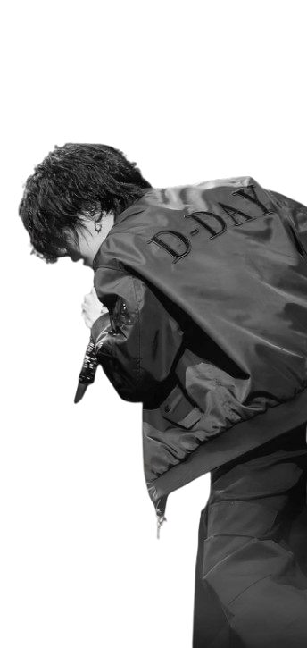
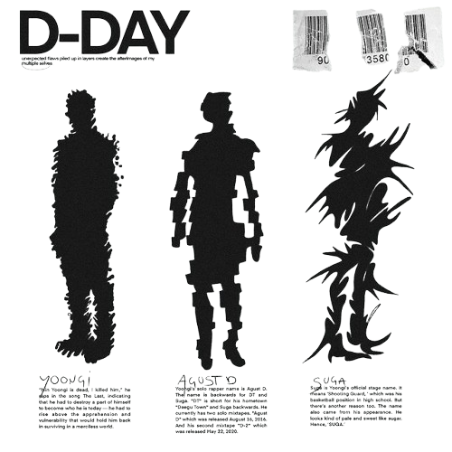

Agust D D-Day Tour
Suga | Gira de Agust D "Día D" fue la primera gira mundial de conciertos del rapero surcoreano Suga,
también conocido como Agust D, para promocionar su álbum de estudio debut, "Día D".
La gira comenzó el 26 de abril de 2023 en Nueva York y finalizó el 6 de agosto de 2023 en Seúl, Corea del Sur.
Hope on the Stage Tour
Hope on the Stage Tour fue la primera gira mundial de conciertos del rapero surcoreano J-Hope,
en apoyo a su álbum de estudio debut, Jack in the Box, y su versión extendida
Hope on the Street Vol. 1. La gira comenzó el 28 de febrero de 2025 en Seúl
y finalizó el 14 de junio de 2025 en Goyang.

D-Day
El 14 de febrero de 2023, Big Hit Music anunció que Suga se embarcaría en una gira mundial con un cartel
que incluía fechas en Estados Unidos, Indonesia, Tailandia, Singapur y Corea del Sur.
El 10 de marzo de 2023 se añadieron tres espectáculos en Japón,
y en abril se sumaron nuevas fechas en Singapur y Bangkok.
Finalmente, el 25 de junio de 2023 se agregaron tres espectáculos adicionales en Seúl,
llevando el total a 28 shows.
Hope on the Stage Tour
Antes de alistarse en abril de 2023, J-Hope lanzó Jack in the Box en julio de 2022,
convirtiéndose en el primer miembro de BTS en lanzar un álbum en solitario.
Durante su servicio militar, lanzó el EP Hope on the Street Vol. 1,
junto con una serie documental de seis partes.
J-Hope completó su servicio militar en octubre de 2024.
El 9 de enero de 2025, J-Hope anunció su primera gira en solitario, "Hope on the Stage".
BigHit Music confirmó las fechas al día siguiente, convirtiéndolo en el segundo miembro de BTS
en realizar una gira mundial en solitario.
La gira comenzó en Seúl el 28 de febrero de 2025 y recorrió Estados Unidos, México, Asia y Japón,
finalizando el 1 de junio de 2025.